⚙️ 机甲大战小兵
Mechs vs. Minions · 设计：Stone Librande · Riot Games 出版 · 2–4 人 · 官方英文规则书全文翻译（16 页 · AI 辅助机翻）
本页收录《机甲大战小兵》（Mechs vs. Minions, 2016）的原版官方规则书全部 16 页（底本：BGG 文件区 Riot Games 官方英文规则书(Wave 2)，MvM_EN_Rulebook_Wave_2.pdf），逐页随图排列，点击任意图片即可放大查看；每页下方默认折叠了该页的 AI 辅助中文机翻对照，需要时可展开。规则内容归 Riot Games 及版权方所有，收录仅供个人学习查阅。
整理说明：机翻对照按本站术语口径对齐（牌库/手牌/回合/轮/板块/指示物等），PDF 图文混排页的语序可能与原书视觉顺序略有出入；规则细节请一律以页面上方原书页面为准。
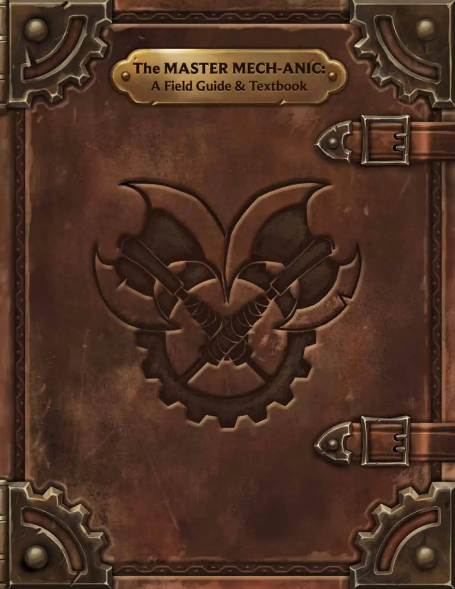
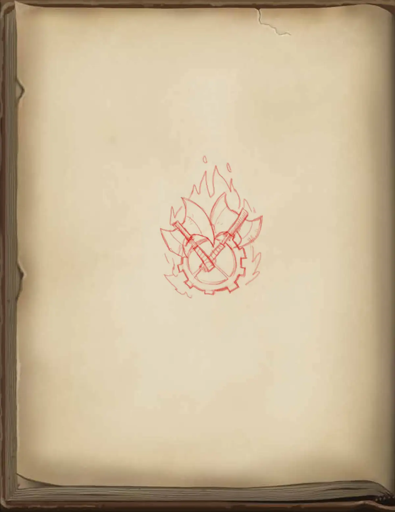
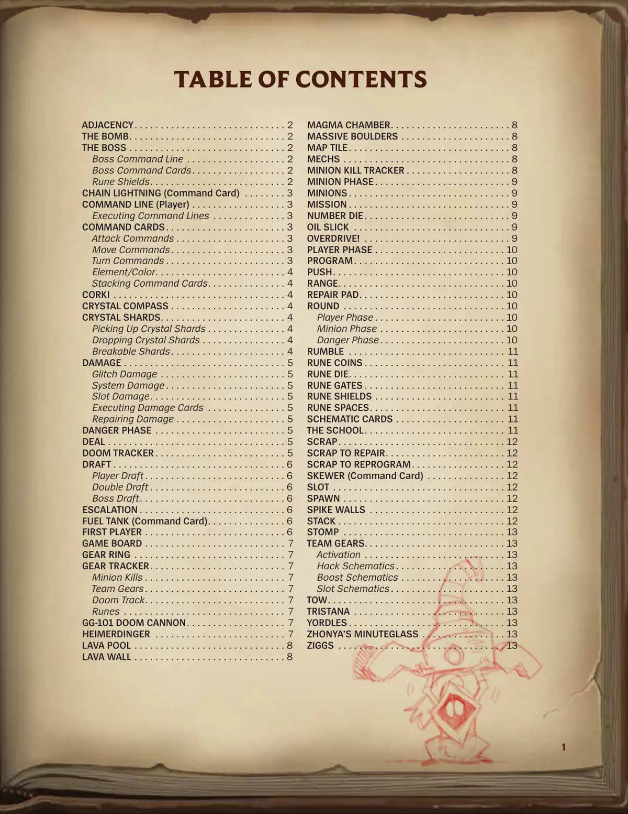
📝 第 3 页 AI 机翻对照（点击展开）
目录
相邻性 . . . . . . . . . . . . . . . . . . . . . . . . . . . . . . 2
炸弹 . . . . . . . . . . . . . . . . . . . . . . . . . . . . . . 2
老板 . . . . . . . . . . . . . . . . . . . . . . . . . . . . . . 2
老板命令行 . . . . . . . . . . . . . . . . . . . . . . . . 2
老板命令卡 . . . . . . . . . . . . . . . . . . . . . . . . 2
符文护盾 . . . . . . . . . . . . . . . . . . . . . . . . . . . 2
链式闪电（命令卡） . . . . . . . . . . . . . . . . . . 3
命令行（玩家） . . . . . . . . . . . . . . . . . . . . . . . 3
执行命令行 . . . . . . . . . . . . . . . . . . . . . . . . 3
命令卡 . . . . . . . . . . . . . . . . . . . . . . . . . . . . . 3
攻击命令 . . . . . . . . . . . . . . . . . . . . . . . . . . . 3
移动命令 . . . . . . . . . . . . . . . . . . . . . . . . . . . 3
转向命令 . . . . . . . . . . . . . . . . . . . . . . . . . . . 3
元素/颜色 . . . . . . . . . . . . . . . . . . . . . . . . . . 4
堆叠命令卡 . . . . . . . . . . . . . . . . . . . . . . . . 4
科尔基 . . . . . . . . . . . . . . . . . . . . . . . . . . . . . . . . . . 4
水晶罗盘 . . . . . . . . . . . . . . . . . . . . . . . . . . . . 4
水晶碎片 . . . . . . . . . . . . . . . . . . . . . . . . . . . . . . 4
拾取水晶碎片 . . . . . . . . . . . . . . . . . . . . . . 4
丢弃水晶碎片 . . . . . . . . . . . . . . . . . . . . . . 4
可破碎碎片 . . . . . . . . . . . . . . . . . . . . . . . 4
伤害 . . . . . . . . . . . . . . . . . . . . . . . . . . . . . . . 5
故障伤害 . . . . . . . . . . . . . . . . . . . . . . . . . 5
系统伤害 . . . . . . . . . . . . . . . . . . . . . . . . 5
槽位伤害 . . . . . . . . . . . . . . . . . . . . . . . . . . . 5
执行伤害卡 . . . . . . . . . . . . . . . . . . . . . . . 5
修复伤害 . . . . . . . . . . . . . . . . . . . . . . . . 5
危险阶段 . . . . . . . . . . . . . . . . . . . . . . . . . . . . 5
发牌 . . . . . . . . . . . . . . . . . . . . . . . . . . . . . . . . . . 5
厄运追踪器 . . . . . . . . . . . . . . . . . . . . . . . . . . 5
抽选 . . . . . . . . . . . . . . . . . . . . . . . . . . . . . . . . . 6
玩家抽选 . . . . . . . . . . . . . . . . . . . . . . . . . . . 6
双倍抽选 . . . . . . . . . . . . . . . . . . . . . . . . . . 6
老板抽选 . . . . . . . . . . . . . . . . . . . . . . . . . . . . 6
升级 . . . . . . . . . . . . . . . . . . . . . . . . . . . . . . . . . 6
燃料箱（命令卡） . . . . . . . . . . . . . . . . . . . . 6
先手玩家 . . . . . . . . . . . . . . . . . . . . . . . . . . . . 6
游戏版图 . . . . . . . . . . . . . . . . . . . . . . . . . . . . 7
齿轮环 . . . . . . . . . . . . . . . . . . . . . . . . . . . . . 7
齿轮追踪器 . . . . . . . . . . . . . . . . . . . . . . . . . . . 7
小怪击杀 . . . . . . . . . . . . . . . . . . . . . . . . . . . 7
团队齿轮 . . . . . . . . . . . . . . . . . . . . . . . . . . . . 7
厄运轨道 . . . . . . . . . . . . . . . . . . . . . . . . . . . . 7
符文 . . . . . . . . . . . . . . . . . . . . . . . . . . . . . . . . 7
GG-101 厄运大炮 . . . . . . . . . . . . . . . . . . . . 7
海默丁格 . . . . . . . . . . . . . . . . . . . . . . . . . . 7
岩浆池 . . . . . . . . . . . . . . . . . . . . . . . . . . . . . 8
岩浆墙 . . . . . . . . . . . . . . . . . . . . . . . . . . . . . 8
岩浆室 . . . . . . . . . . . . . . . . . . . . . . . . . . . . . 8
巨大岩石 . . . . . . . . . . . . . . . . . . . . . . . . . . . 8
地图板块 . . . . . . . . . . . . . . . . . . . . . . . . . . . . . . . . 8
机甲 . . . . . . . . . . . . . . . . . . . . . . . . . . . . . . . . . 8
小怪追踪器 . . . . . . . . . . . . . . . . . . . . . . . . . . . 8
小怪阶段 . . . . . . . . . . . . . . . . . . . . . . . . . . . 9
小怪 . . . . . . . . . . . . . . . . . . . . . . . . . . . . . . . . 9
任务 . . . . . . . . . . . . . . . . . . . . . . . . . . . . . . . . 9
数字骰子 . . . . . . . . . . . . . . . . . . . . . . . . . . . . . 9
油污 . . . . . . . . . . . . . . . . . . . . . . . . . . . . . . . 9
超载！ . . . . . . . . . . . . . . . . . . . . . . . . . . . . . 9
玩家阶段 . . . . . . . . . . . . . . . . . . . . . . . . . 10
程序 . . . . . . . . . . . . . . . . . . . . . . . . . . . . . 10
推动 . . . . . . . . . . . . . . . . . . . . . . . . . . . . . . . . . 10
射程 . . . . . . . . . . . . . . . . . . . . . . . . . . . . . . . . . 10
维修平台 . . . . . . . . . . . . . . . . . . . . . . . . . . . . 10
轮 . . . . . . . . . . . . . . . . . . . . . . . . . . . . . . . . 10
玩家阶段 . . . . . . . . . . . . . . . . . . . . . . . . . 10
小怪阶段 . . . . . . . . . . . . . . . . . . . . . . . . . 10
危险阶段 . . . . . . . . . . . . . . . . . . . . . . . . . 10
轰鸣 . . . . . . . . . . . . . . . . . . . . . . . . . . . . . . . 11
符文币 . . . . . . . . . . . . . . . . . . . . . . . . . . . . 11
符文骰子 . . . . . . . . . . . . . . . . . . . . . . . . . . . . . . 11
符文门 . . . . . . . . . . . . . . . . . . . . . . . . . . . . 11
符文护盾 . . . . . . . . . . . . . . . . . . . . . . . . . . 11
符文格 . . . . . . . . . . . . . . . . . . . . . . . . . . . 11
设计图卡 . . . . . . . . . . . . . . . . . . . . . . . . . . . 11
学院 . . . . . . . . . . . . . . . . . . . . . . . . . . . . 11
废料 . . . . . . . . . . . . . . . . . . . . . . . . . . . . . . . . 12
废料维修 . . . . . . . . . . . . . . . . . . . . . . . . 12
废料重编程 . . . . . . . . . . . . . . . . . . . . . . . . 12
串刺（指令卡） . . . . . . . . . . . . . . . . . . . . . . 12
尖刺墙 . . . . . . . . . . . . . . . . . . . . . . . . . . . 12
堆叠 . . . . . . . . . . . . . . . . . . . . . . . . . . . . . . . . 12
践踏 . . . . . . . . . . . . . . . . . . . . . . . . . . . . . . . . 13
齿轮团队 . . . . . . . . . . . . . . . . . . . . . . . . . . . 13
激活 . . . . . . . . . . . . . . . . . . . . . . . . . . . . 13
黑客蓝图 . . . . . . . . . . . . . . . . . . . . . . 13
增强蓝图 . . . . . . . . . . . . . . . . . . . . . 13
插槽蓝图 . . . . . . . . . . . . . . . . . . . . . . 13
拖曳 . . . . . . . . . . . . . . . . . . . . . . . . . . . . . . . . . . 13
崔丝塔娜 . . . . . . . . . . . . . . . . . . . . . . . . . . . . . . 13
约德尔人 . . . . . . . . . . . . . . . . . . . . . . . . . . . . . . 13
祖安的沙漏 . . . . . . . . . . . . . . . . . . . . . . . . . . . 13
吉格斯 . . . . . . . . . . . . . . . . . . . . . . . . . . . . . . . . . 13
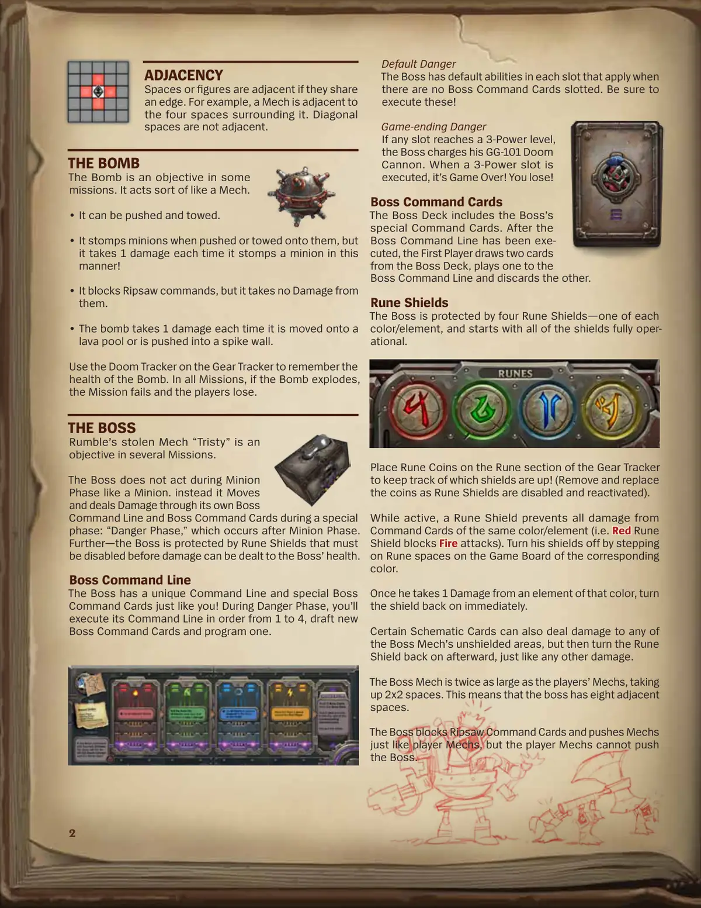
📝 第 4 页 AI 机翻对照（点击展开）
相邻
如果两个区域或图形共享一条边，则它们是相邻的。例如，一个机甲与其周围的四个区域相邻。对角区域不相邻。
炸弹
炸弹在某些任务中是一个目标。它的行为有点像机甲。
• 它可以被推动和拖拽。
• 当它被推动或拖拽到小兵身上时，它会踩踏小兵，但每次以这种方式踩踏小兵时，它会受到1点伤害！
• 它会阻挡"锯齿"指令，但不会因此受到任何伤害。
• 每次炸弹被移动到熔岩池或被推入尖刺墙时，它会受到1点伤害。
使用装备追踪器上的末日追踪器来记住炸弹的生命值。在所有任务中，如果炸弹爆炸，任务失败，玩家输掉游戏。
老板
伦布偷来的机甲"Tristy"在几个任务中是一个目标。
老板不像小兵那样在小兵阶段行动。相反，它会在一个特殊阶段："危险阶段"期间，通过它自己的老板指令线和老板指令卡来移动和造成伤害，该阶段发生在小兵阶段之后。此外——老板受到符文护盾的保护，必须先禁用这些护盾才能对老板的生命值造成伤害。
老板指令线
老板拥有独特的指令线和特殊的老板指令卡，就像你一样！在危险阶段，你将按1到4的顺序执行它的指令线，抽取新的老板指令卡并编程一张。
默认危险
老板在每个槽位都有默认能力，当没有老板指令卡插入时生效。确保执行这些！
游戏结束危险
如果任何槽位达到3级能量，老板会为他GG-101末日充能炮充能。当一个3级能量槽位被执行时，游戏结束！你输了！
老板指令卡
老板牌组包含老板的特殊指令卡。在老板指令线被执行后，第一个玩家从老板牌组中抽取两张牌，一张放入老板指令线，另一张弃掉。
符文护盾
老板受到四个符文护盾的保护——每种颜色/元素各一个，并开始时所有护盾完全运作。
在装备追踪器的符文区域放置符文硬币来跟踪哪些护盾是激活的！（当符文护盾被禁用和重新激活时，移除并替换这些硬币）。激活时，符文护盾会阻止所有相同颜色/元素的指令卡造成的伤害（即红色符文护盾阻挡火焰攻击）。通过踩踏游戏板上相应颜色的符文区域来关闭他的护盾。
一旦他从该颜色的元素受到1点伤害，立即重新激活护盾。
某些设计图卡也可以对老板机甲的任何无护盾区域造成伤害，但之后会重新激活符文护盾，就像任何其他伤害一样。
老板机甲是玩家机甲的两倍大，占用
向上2x2个格。这意味着老板有八个相邻的格。
老板会阻挡"锯齿"(Ripsaw)指令卡牌，并且会推动机甲，就像玩家机甲一样，但是玩家机甲无法推动老板。
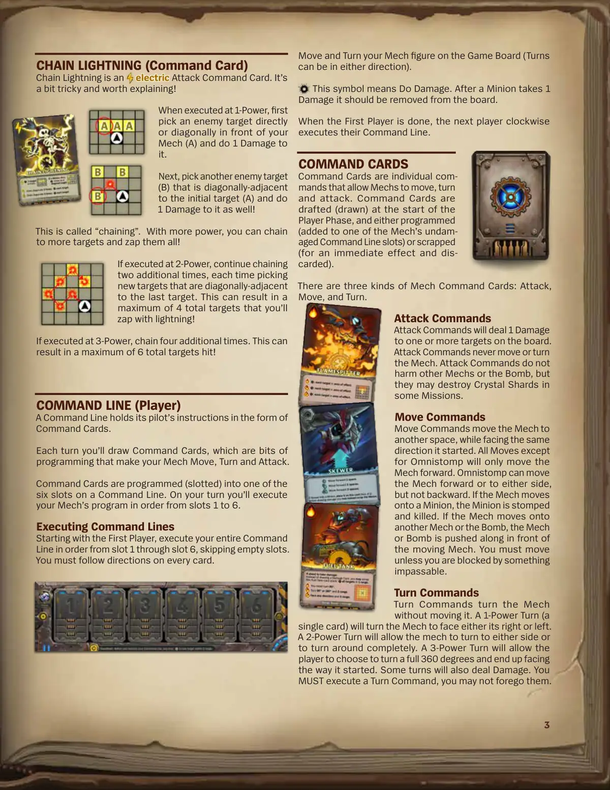
📝 第 5 页 AI 机翻对照（点击展开）
连锁闪电（指挥卡）
连锁闪电是一种电击攻击指挥卡。它有点复杂，值得解释！
当以1点力量执行时，首先选择你机甲正前方或对角线方向的一个敌方目标（A），并对它造成1点伤害。
接下来，选择另一个与初始目标（A）对角相邻的敌方目标（B），并对它也造成1点伤害！
这被称为"连锁"。使用更多力量时，你可以连锁到更多目标，并用闪电击中它们！
如果以2点力量执行，继续连锁两次，每次选择与上一个目标对角相邻的新目标。这最多可以导致总共4个被闪电击中的目标！
如果以3点力量执行，连锁四次。这最多可以导致总共6个被击中的目标！
指挥线（玩家）
指挥线以其驾驶员的指令形式持有指挥卡。
每个回合你将摸取指挥卡，这些是让你的机甲移动、转向和攻击的编程片段。
指挥卡被编程（插入）到指挥线的六个槽位之一。在你的回合，你将从槽位1到槽位6顺序执行你的机甲程序。
执行指挥线
从先手玩家开始，顺序执行整个指挥线，从槽位1到槽位6，跳过空槽位。
你必须遵循每张卡上的指示。
在游戏版图上移动和转向你的机甲模型（转向可以是任一方向）。
这个符号表示造成伤害。当仆从承受1点伤害后，应将其从版图上移除。
当先手玩家完成后，顺时针方向的下一个玩家执行他们的指挥线。
指挥卡
指挥卡是允许机甲移动、转向和攻击的单独命令。指挥卡在玩家阶段开始时被抽取（摸取），并被编程（添加到机甲未受损的指挥线槽位之一）或废弃（以获得即时效果并弃置）。
有机甲指挥卡三种类型：攻击、移动和转向。
攻击命令
攻击命令将对版图上的一个或多个目标造成1点伤害。
攻击命令从不移动或转向机甲。攻击命令不会伤害其他机甲或炸弹，但在某些任务中它们可能会摧毁水晶碎片。
移动命令
移动命令将机甲移动到另一个格子，同时保持开始时的朝向方向。除了全踏步之外，所有移动都只会使机向前移动。全踏步可以使机甲向前或向两侧移动，但不能向后。如果机甲移动到一个仆从身上，仆被踩踏致死。如果机甲移动到另一个机甲或炸弹上，该机甲或炸弹会被推到移动机甲的前方。除非被不可通过的东西阻挡，否则你必须移动。
转向命令
转向命令使机甲转向
不移动它。1点力量回合（一张卡牌）将使机甲转向其右侧或左侧。2点力量回合将允许机甲转向任意一侧或完全转向。3点力量回合将允许玩家选择完整旋转360度并最终面向起始方向。某些回合还会造成伤害。你必须执行转向指令，不得跳过它们。
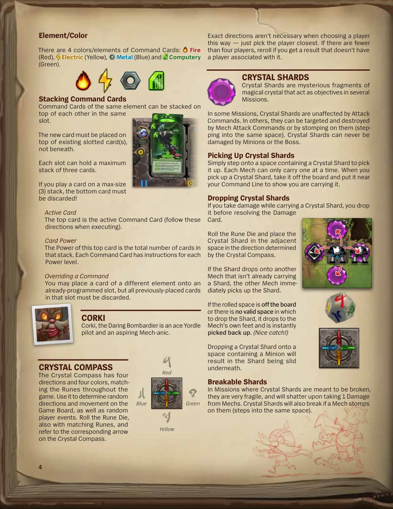
📝 第 6 页 AI 机翻对照（点击展开）
元素/颜色
指令卡有4种颜色/元素：
火（红色）、电（黄色）、
金属（蓝色）和计算（绿色）。
堆叠指令卡
相同元素的指令卡可以堆叠在
同一个槽位中。
新卡必须放在已放置的卡牌
上方，而不是下方。
每个槽位最多可堆叠三张卡。
如果你在已达到最大容量（3张）的牌堆上打出一张卡，最底下的卡必须被弃置！
激活卡
顶部的卡是激活的指令卡（执行时遵循这些指示）。
卡牌威力
顶部卡牌的威力是该牌堆中的卡牌总数。每张指令卡都有针对每个威力等级的说明。
覆盖指令
你可以将不同元素的卡牌放置到已编程的槽位上，但该槽位中之前放置的所有卡牌必须被弃置。
CORKI
科奇，大胆的轰炸机，是一名王牌约德尔飞行员，同时也是一名有抱负的机械师。
水晶罗盘
水晶罗盘有四个方向和四种颜色，与游戏中的符文相匹配。用它来确定游戏版图上的随机方向和移动，以及随机玩家事件。掷带有匹配符文的符文骰子，并参考水晶罗盘上相应的箭头。
以这种方式选择玩家时不需要精确方向——只需选择最近的玩家。如果玩家少于四人，当你得到一个没有关联玩家的结果时，需要重新掷骰。
水晶碎片
水晶碎片是神秘的魔法水晶碎片，在几个任务中作为目标。
在某些任务中，水晶碎片不受攻击指令的影响。在其他任务中，它们可以被机械攻击指令或踩踏（进入同一格）作为目标并摧毁。水晶碎片永远不会被小怪或Boss伤害。
拾取水晶碎片
只需进入包含水晶碎片的格子即可拾取。每个机械一次只能携带一个。当你拾取水晶碎片时，将其从版图上拿走，放在你的指令线附近，表示你正在携带它。
丢弃水晶碎片
如果你在携带水晶碎片时受到伤害，你必须在解决伤害卡之前丢弃它。
掷符文骰子，并根据水晶罗盘确定的方向，将水晶碎片放置在相邻的格子上。
如果碎片掉落到另一个已经携带碎片的机械上，另一个机械立即拾取碎片。
如果掷出的格子超出版图范围，或者没有有效的格子可以放置碎片，它会掉落到机械自己的脚下并被立即重新拾起。（接得好！）
将水晶碎片丢弃到包含小怪的格子上会导致碎片被滑到下方。
可破碎的碎片
在需要打碎水晶碎片的任务中，它们非常脆弱，会受到机甲造成1点伤害就会破碎。如果机甲踩踏水晶碎片（进入同一格），水晶碎片也会破碎。
红色
黄色
蓝色
绿色
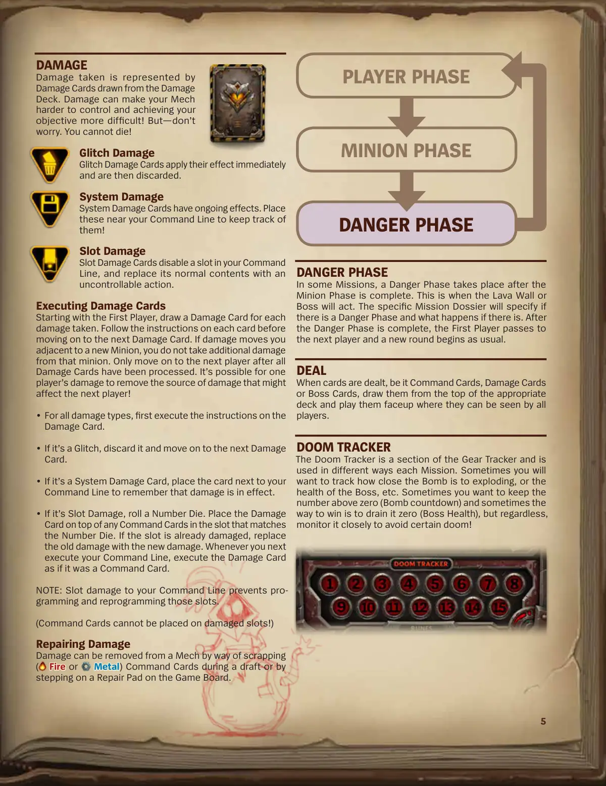
📝 第 7 页 AI 机翻对照（点击展开）
伤害
受到的伤害通过从伤害牌库中抽取伤害牌来表示。伤害会使你的机甲更难控制，并让你更难达成目标！但是——别担心。你不会死亡！
故障伤害
故障伤害牌会立即生效，然后被弃置。
系统伤害
系统伤害牌有持续效果。将这些牌放在你的指令线旁边，以便跟踪它们！
槽位伤害
槽位伤害牌会使你指令线中的一个槽位失效，并将其正常内容替换为一个不可控制的行动。
执行伤害牌
从起始玩家开始，为所受的每点伤害抽取一张伤害牌。在处理下一张伤害牌之前，先遵循每张牌上的说明。如果伤害使你移动到一个新的仆从相邻的位置，你不会从该仆那里受到额外伤害。只有在所有伤害牌都被处理完毕后，才轮到下一位玩家。有可能一个玩家的伤害会移除可能影响下一位玩家的伤害源！
• 对于所有类型的伤害，首先执行伤害牌上的说明。
• 如果是故障伤害，弃置它并继续下一张伤害牌。
• 如果是系统伤害牌，将该牌放在你的指令线旁边，以记住该伤害正在生效。
• 如果是槽位伤害，掷一个数字骰子。将伤害牌放在与数字骰子匹配的槽位中的任何指令牌上方。如果该槽位已经受损，用新的伤害替换旧的伤害。当你下次执行你的指令线时，将伤害牌当作指令牌一样执行。
注意：对你指令线的槽位伤害会阻止编程和重新编程这些槽位。
（指令牌不能放在受损的槽位上！）
修复伤害
机甲的伤害可以通过在抽牌阶段报废（火焰或金属）指令牌，或者踩在游戏版图上的修复垫来移除。
危险阶段
在某些任务中，在仆从阶段完成后会进行危险阶段。这是岩浆墙或Boss行动的时候。具体的任务档案会说明是否有危险阶段以及如果有会发生什么。危险阶段完成后，起始玩家传给下一位玩家，新一轮如常开始。
发牌
当发牌时，无论是指令牌、伤害牌还是Boss牌，都从相应牌库的顶部抽取，并正面朝上放置在所有玩家都能看到的地方。
厄运追踪器
厄运追踪器是装备追踪器的一部分，在每个任务中以不同方式使用。有时你会想要追踪炸弹即将爆炸的程度，或Boss的生命值等。有时你希望保持数字在零以上（炸弹倒计时），有时获胜方式是将其降至零（Boss生命值），但无论如何，
密切监控它，以避免注定毁灭的命运！
仆从阶段
玩家阶段
危险阶段
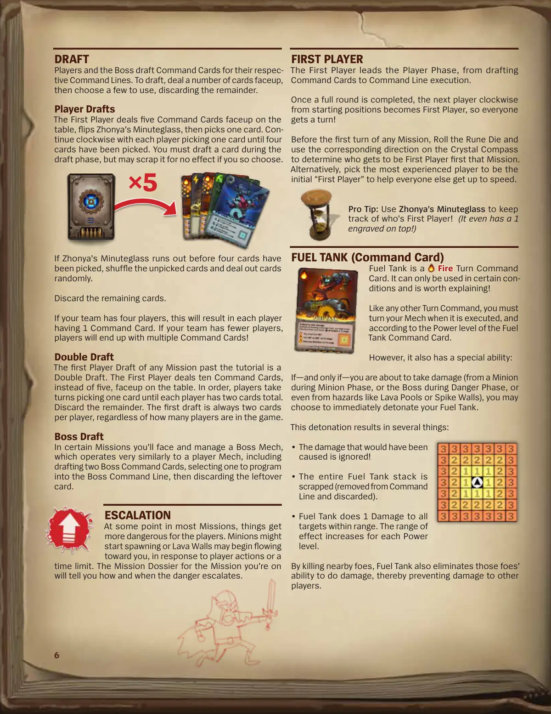
📝 第 8 页 AI 机翻对照（点击展开）
草稿
玩家和老板分别为各自的指令线选择指令卡。进行选择时，将一定数量的牌面朝上放置，然后选择一些使用，其余的弃掉。
玩家选择
第一位玩家将五张指令牌面朝上放在桌上，翻转佐尼亚的沙漏，然后选择一张牌。按顺时针方向继续，每位玩家选择一张牌，直到选出四张牌。你必须在选择阶段选择一张牌，但如果愿意，也可以将其弃掉以无效果。
如果在选出四张牌之前佐尼亚的沙漏用完，将未被选中的牌洗牌，然后随机发出牌。
弃掉剩余的牌。
如果你的队伍有四位玩家，这将导致每位玩家拥有1张指令牌。如果你的玩家较少，玩家最终会拥有多张指令牌！
双重选择
除了教程之外的任何任务的第一位玩家选择都是双重选择。第一位玩家将十张指令牌（而不是五张）面朝上放在桌上。按顺序，玩家轮流选择一张牌，直到每位玩家总共拥有两张牌。弃掉剩余的牌。第一次选择总是每位玩家两张牌，无论游戏中有多少玩家。
老板选择
在某些任务中，你将面对并管理一个老板机甲，其运作方式与玩家机甲非常相似，包括选择两张老板指令牌，选择一张编程到老板指令线中，然后弃掉剩余的牌。
升级
在大多数任务的某个时刻，情况对玩家来说会变得更加危险。小怪可能会开始生成，或者岩浆墙可能开始向你流动，这是对玩家行动或时间限制的回应。你所进行任务的任务档案会告诉你危险如何以及何时升级。
第一位玩家
第一位玩家领导玩家阶段，从选择指令牌到指令线执行。
完成一个完整轮次后，从起始位置顺时针方向的下一个玩家成为第一位玩家，这样每个人都能轮到一次！
在任何任务的第一回合之前，投掷符文骰子，使用水晶罗盘上对应的方向来确定谁在该任务中首先成为第一位玩家。
或者，选择最有经验的玩家作为初始的"第一位玩家"，以帮助其他人快速上手。
专业提示：使用佐尼亚的沙漏来追踪谁是第一位玩家！（它顶部甚至刻有1！）
燃料箱（指令牌）
燃料箱是一个
回合指令牌。
它只能在特定条件下使用，值得解释！
与其他任何回合指令一样，执行时你必须转动你的机甲，并根据燃料箱指令牌的能量等级进行转动。
但是，它还有一个特殊能力：
如果——并且只有在你即将受到伤害（来自小怪
在爪牙阶段或危险阶段的Boss，甚至来自岩浆池或尖刺墙等危险源）时，你可以选择立即引爆你的燃料罐。
这次引爆会导致以下几种情况：
• 原本会造成的伤害被忽略！
• 整个燃料罐堆被报废（从指令线移除并弃置）。
• 燃料罐对范围内所有目标造成1点伤害。效果范围会随每级能量等级而增加。
通过消灭附近的敌人，燃料罐也消除了那些敌人造成伤害的能力，从而防止对其他玩家造成伤害。
×5
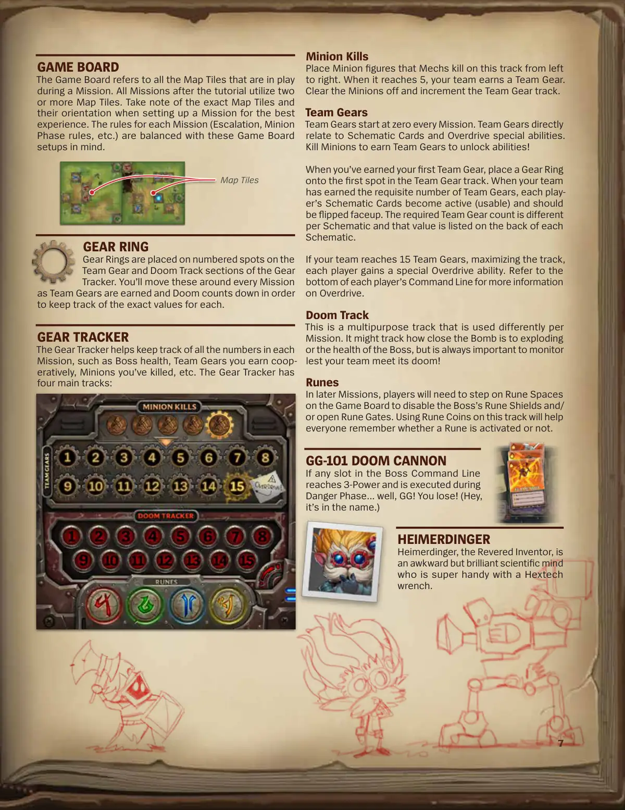
📝 第 9 页 AI 机翻对照（点击展开）
游戏版图
游戏版图指的是任务进行中所有在使用的地图板块。教程后的所有任务都会使用两个或更多的地图板块。在设置任务时，请注意确切的地图板块及其方向，以获得最佳体验。每个任务（如升级、爪牙阶段规则等）的规则都是考虑到这些游戏版图设置而平衡的。
齿轮环
齿轮环放置在齿轮追踪器的团队齿轮和厄运轨道部分的编号位置上。每当获得团队齿轮和厄运值倒计时减少时，你都需要移动这些齿轮环，以跟踪每个的确切数值。
齿轮追踪器
齿轮追踪器帮助跟踪每个任务中的所有数值，例如Boss的生命值、团队共同获得的团队齿轮、已消灭的爪牙等。齿轮追踪器有四个主要轨道：
爪牙击杀
将从左到右将机甲消灭的爪牙棋子放置在此轨道上。当达到5时，你的团队将获得一个团队齿轮。清除爪牙棋子并增加团队齿轮轨道。
团队齿轮
每个任务开始时团队齿轮为零。团队齿轮与蓝图卡牌和过载特殊能力直接相关。消灭爪牙来获得团队齿轮以解锁能力！
当你的团队获得第一个团队齿轮时，将一个齿轮环放置在团队齿轮轨道的第一个位置。当你的团队获得了所需数量的团队齿轮时，每位玩家的蓝图卡牌将变为激活状态（可使用）并应翻至正面朝上。每个蓝图所需的团队齿轮数量不同，该数值列在每个蓝图的背面。
如果你的团队达到15个团队齿轮，即轨道的最大值，每位玩家将获得一个特殊的过载能力。有关过载的更多信息，请参考每位玩家指令线的底部。
厄运轨道
这是一个多功能轨道，每个任务的使用方式不同。它可以追踪炸弹爆炸的接近程度或Boss的生命值，但始终需要密切监控，以免你的团队遭遇厄运！
符文
在后续任务中，玩家需要踏上游戏版图上的符文格，以禁用Boss的符文护盾和/或打开符文门。在此轨道上使用符文硬币将帮助每个人记住符文是否已被激活。
GG-101厄运加农炮
如果Boss指令线中的任何槽位达到3点能量并在危险阶段被执行...那么，游戏结束！你输了！（嘿，这就在名字里。）
海默丁格
海默丁格，备受尊敬的发明家，是一个笨拙但才华横溢的科学头脑，对使用源科技扳手超级在行。
地图板块
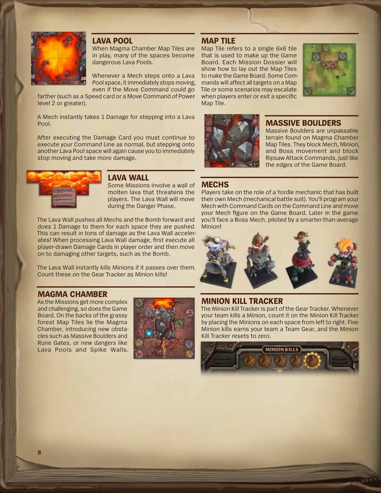
📝 第 10 页 AI 机翻对照（点击展开）
岩浆池
当岩浆室地图板块在场时，许多区域会变成危险的岩浆池。
每当机甲踏上岩浆池区域，它会立即停止移动，即使移动指令可以走得更远（例如速度卡牌或力量等级2或更高的移动指令）。
机甲踏入岩浆池会立即受到1点伤害。
执行伤害卡牌后，你必须继续正常执行你的指令线，但踏上另一个岩浆池区域会再次导致你立即停止移动并受到更多伤害。
岩浆墙
某些任务涉及威胁玩家的熔岩墙。岩浆墙会在危险阶段移动。
岩浆墙会将所有机甲和炸弹向前推进，并对它们被推进的每个区域造成1点伤害。随着岩浆墙的加速，这可能导致大量伤害！处理岩浆墙伤害时，先按玩家顺序执行所有玩家抽取的伤害卡，然后再继续伤害其他目标，如炸弹。
岩浆墙如果经过小兵会立即消灭它们。在装备追踪器上将这些计为小兵击杀！
岩浆室
随着任务变得越来越复杂和具有挑战性，游戏版图也是如此。在草地森林地图板块的背面是岩浆室，引入了新的障碍物，如巨石和符文门，或新的危险，如岩浆池和尖刺墙。
地图板块
地图板块是指构成游戏版图的单个6x6板块。每个任务档案会展示如何布置地图板块来制作游戏版图。某些指令会影响地图板块上的所有目标，或者在某些情况下，当玩家进入或离开特定地图板块时，情况会升级。
巨石
巨石是岩浆室地图板块上不可通行的地形。它们阻挡机甲、小兵和首领的移动，并阻挡锯齿攻击指令，就像游戏版图的边缘一样。
机甲
玩家扮演约德尔技工的角色，他们建造了自己的机甲（机械战斗服）。你将在指令线上用指令卡编程你的机甲，并在游戏版图上移动你的机甲棋子。游戏后期，你将面对由比普通小兵更聪明的对手驾驶的首领机甲！
小兵击杀追踪器
小兵击杀追踪器是装备追踪器的一部分。每当你的队伍击杀一个小兵，就在小兵击杀追踪器上从左到右在每个空间上放置一个小兵。五次小兵击杀为你的队伍赢得一个队伍装备，小兵击杀追踪器重置为零。
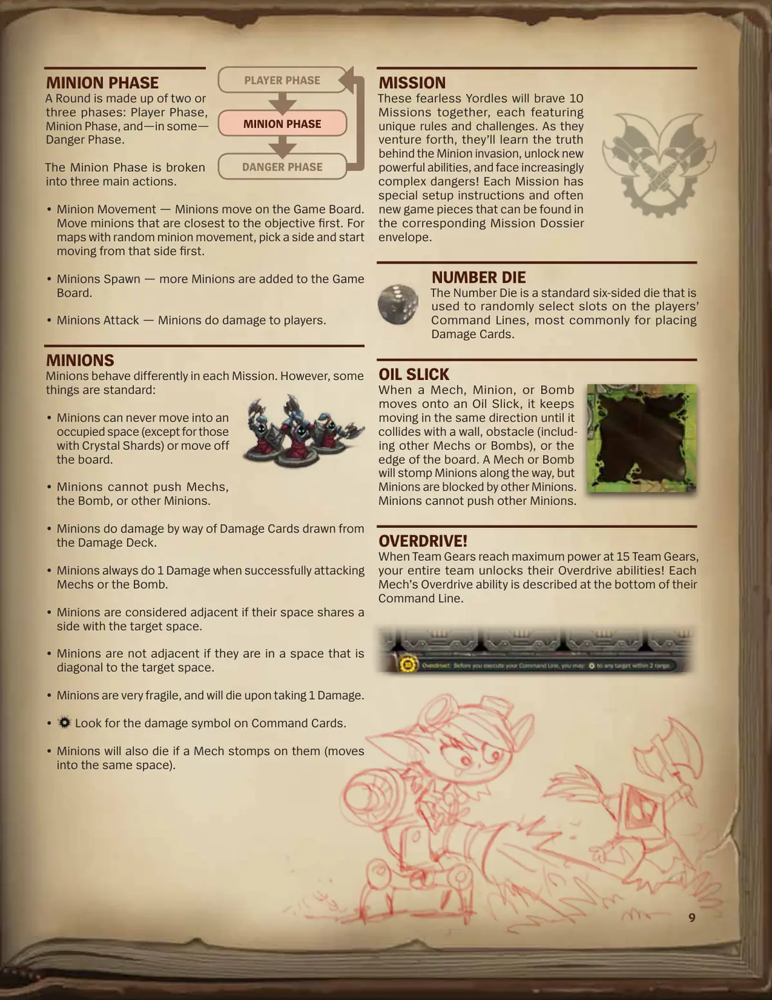
📝 第 11 页 AI 机翻对照（点击展开）
仆从阶段
一轮由两个或三个阶段组成：玩家阶段、仆从阶段，以及在某些情况下的危险阶段。
仆从阶段分为三个主要行动。
• 仆从移动 — 仆从在游戏版图上移动。先移动最接近目标的仆从。对于具有随机仆从移动的地图，选择一个侧面，并从该侧面开始移动。
• 仆从生成 — 更多仆从被添加到游戏版图上。
• 仆从攻击 — 仆从对玩家造成伤害。
仆从
每个任务中，仆从的行为都不同。然而，有些事情是标准化的：
• 仆从永远不能进入已占据的空间（除了那些有水晶碎片的）或离开版图。
• 仆从不能推动机甲、炸弹或其他仆从。
• 仆从通过从伤害牌库中抽取伤害牌来造成伤害。
• 仆从在成功攻击机甲或炸弹时总是造成1点伤害。
• 如果仆从的空间与目标空间共享一条边，则认为它们是相邻的。
• 如果仆从位于与目标空间对角线的空间中，则它们不相邻。
• 仆从非常脆弱，受到1点伤害就会死亡。
•
查看指挥卡上的伤害符号。
• 如果机甲踩踏仆从（移动到同一空间），仆从也会死亡。
任务
这些无畏的约德尔人将共同完成10个任务，每个任务都有独特的规则和挑战。当他们冒险前进时，他们将了解仆从入侵背后的真相，解锁新的强大能力，并面对越来越复杂的危险！每个任务都有特殊的设置说明，通常可以在相应的任务档案信封中找到新的游戏棋子。
数字骰子
数字骰子是一个标准的六面骰子，用于随机选择玩家指挥线上的槽位，最常用于放置伤害牌。
油渍
当机甲、仆从或炸弹移动到油渍上时，它会继续沿同一方向移动，直到撞到墙壁、障碍物（包括其他机甲或炸弹）或版图边缘。机甲或炸弹会沿途踩踏仆从，但仆从会被其他仆从阻挡。仆从不能推动其他仆从。
过载！
当队伍齿轮达到15点最大值时，你的整个队伍解锁了他们的过载能力！每个机甲的过载能力描述在其指挥线的底部。
仆从阶段
玩家阶段
危险阶段
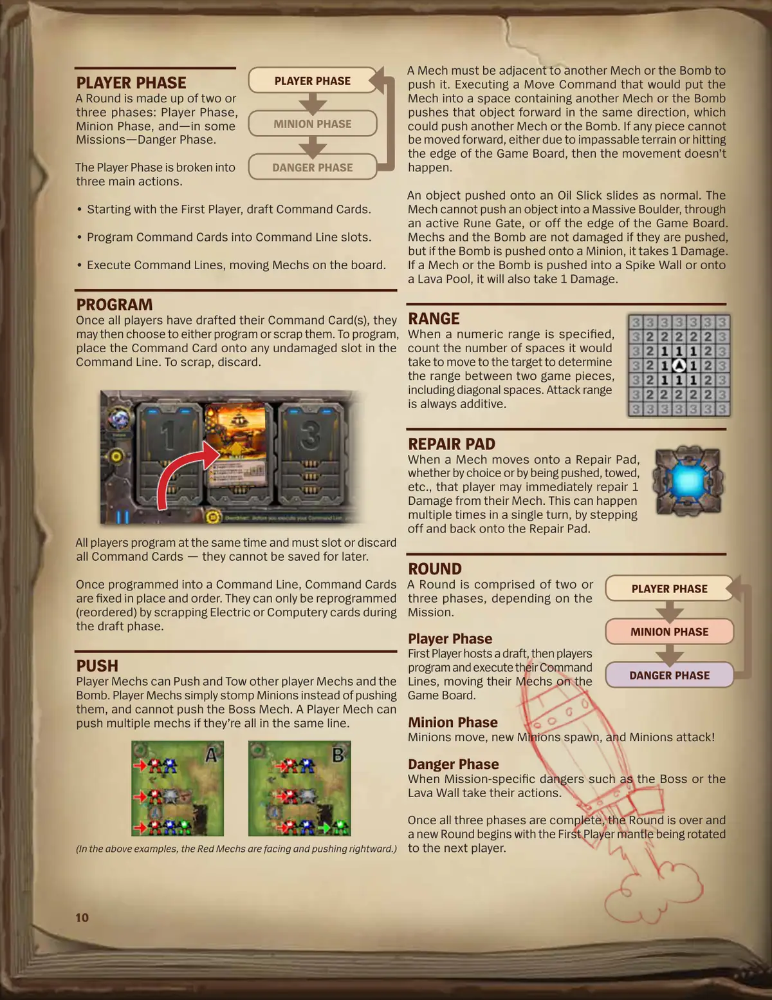
📝 第 12 页 AI 机翻对照（点击展开）
玩家阶段
一轮由两个或三个阶段组成：玩家阶段、小怪阶段，以及在某些任务中的危险阶段。
玩家阶段分为三个主要行动。
• 从起始玩家开始，指挥卡牌。
• 将指挥卡牌编入指挥线槽位。
• 执行指挥线，在版图上移动机甲。
编程
所有玩家都抽取了他们的指挥卡后，他们可以选择编程或废弃这些卡牌。要编程，将指挥卡放入指挥线上任何未损坏的槽位。要废弃，则弃置。
所有玩家同时编程，必须将所有指挥卡放入槽位或弃置——它们不能留到后面使用。
一旦被编入指挥线，指挥卡就固定在位置和顺序上。它们只能在抽取阶段通过废弃电力或计算卡牌来重新编程（重新排序）。
推撞
玩家机甲可以推撞和拖曳其他玩家机甲和炸弹。玩家机甲只是踩踏小怪而不是推撞它们，并且不能推撞首领机甲。如果所有机甲都在同一条线上，一个玩家机甲可以推撞多个机甲。
（在上面的例子中，红色机甲面向并向右推撞。）
一个机甲必须与另一个机甲或炸弹相邻才能推撞它。执行一个移动指令，使机甲进入包含另一个机甲或炸弹的空间，会将该物体向前推，方向相同，这可能会推撞另一个机甲或炸弹。如果任何物体因无法通过的地形或撞到游戏版图边缘而无法向前移动，则移动不会发生。
被推撞到油渍上的物体正常滑动。机甲不能将物体推入巨石、穿过激活的符文之门或离开游戏版图的边缘。
机甲和炸弹被推撞时不会受到伤害，但如果炸弹被推撞到小怪身上，它会受到1点伤害。如果一个机甲或炸弹被推撞到尖刺墙或岩浆池上，它也会受到1点伤害。
射程
当指定了数字射程时，计算移动到目标所需经过的空间数，以确定两个游戏棋子之间的射程，包括对角线空间。攻击射程总是累加的。
维修垫
当机甲移动到维修垫上时，无论是主动选择还是被推撞、拖曳等，该玩家可以立即修复其机甲的1点伤害。通过离开并重新回到维修垫上，这可以在单个回合内发生多次。
轮
一轮由两个或三个阶段组成，取决于任务。
玩家阶段
起始玩家主持抽取，然后玩家编程并执行他们的指挥线，在游戏版图上移动他们的机甲。
小怪阶段
小怪移动，新小怪生成，小怪攻击！
危险阶段
当任务特定的危险，如首领或
仆从阶段
玩家阶段
危险阶段
仆从阶段
玩家阶段
危险阶段
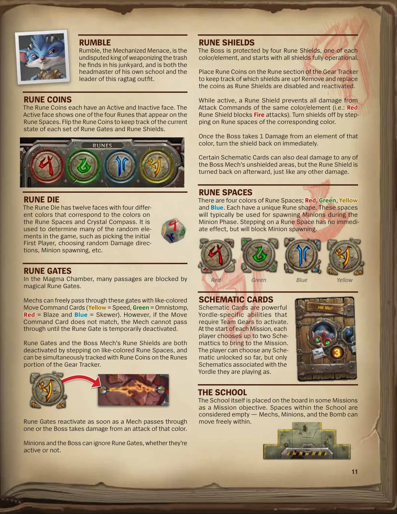
📝 第 13 页 AI 机翻对照（点击展开）
RUMBLE
Rumble，机械化威胁，是无可争议的垃圾场武器化之王，既是自己的校长，也是这支杂牌队伍的领袖。
符文硬币
每枚符文硬币都有正面和背面。正面显示出现在符文空间上的四种符文中的一种。翻转符文硬币以跟踪每组符文门和符文护盾的当前状态。
符文骰子
符文骰子有十二个面，有四种不同的颜色，对应符文空间和水晶罗盘上的颜色。它用于确定游戏中的许多随机元素，例如选择初始先手玩家、选择随机伤害方向、小怪生成等。
符文门
在熔岩室中，许多通道被魔法符文门阻挡。
机甲可以使用同色的移动指令卡（黄色=速度，绿色=全踏，红色=烈焰，蓝色=穿刺）自由通过这些门。但是，如果移动指令卡不匹配，机甲无法通过，直到符文门被暂时停用。
符文门和Boss机甲的符文护盾都可以通过踩在同色的符文空间上来停用，并且可以在齿轮追踪器的符文部分同时用符文硬币进行跟踪。
一旦机甲通过一个符文门或Boss受到该颜色攻击的伤害，符文门就会重新激活。
小怪和Boss可以忽略符文门，无论它们是否处于激活状态。
符文护盾
Boss受到四种符文护盾的保护，每种颜色/元素各一个，开始时所有护盾都完全运作。
在齿轮追踪器的符文部分放置符文硬币以跟踪哪些护盾处于激活状态！随着符文护盾的停用和重新激活，移除并替换这些硬币。
激活状态下，符文护盾可以阻止所有同色/元素的攻击指令造成的伤害（即：红色符文护盾阻挡火焰攻击）。通过踩在相应颜色的符文空间来关闭护盾。
一旦Boss受到该颜色元素的1点伤害，立即重新激活该护盾。
某些设计图卡也可以对Boss机甲任何无护盾的区域造成伤害，但之后符文护盾会像其他伤害一样重新激活。
符文空间
符文空间有四种颜色：红色、绿色、黄色和蓝色。每种都有独特的符文形状。这些空间通常在小怪阶段用于生成小怪。踩在符文空间上没有立即效果，但会阻止小怪生成。
设计图卡
设计图是约德尔人特有的强大能力，需要团队齿轮来激活。
在每个任务开始时，每位玩家可以选择最多两张设计图带到任务中。
玩家可以选择到目前为止已解锁的任意
蓝图，但只能选择与他们所扮演的约德尔
相关的蓝图。
学院
学院本身在某些任务中被放置在版图上
作为任务目标。学院内的空间被视为空
的——机甲、仆从和炸弹可以在其中自由
移动。
红色
绿色
蓝色
黄色
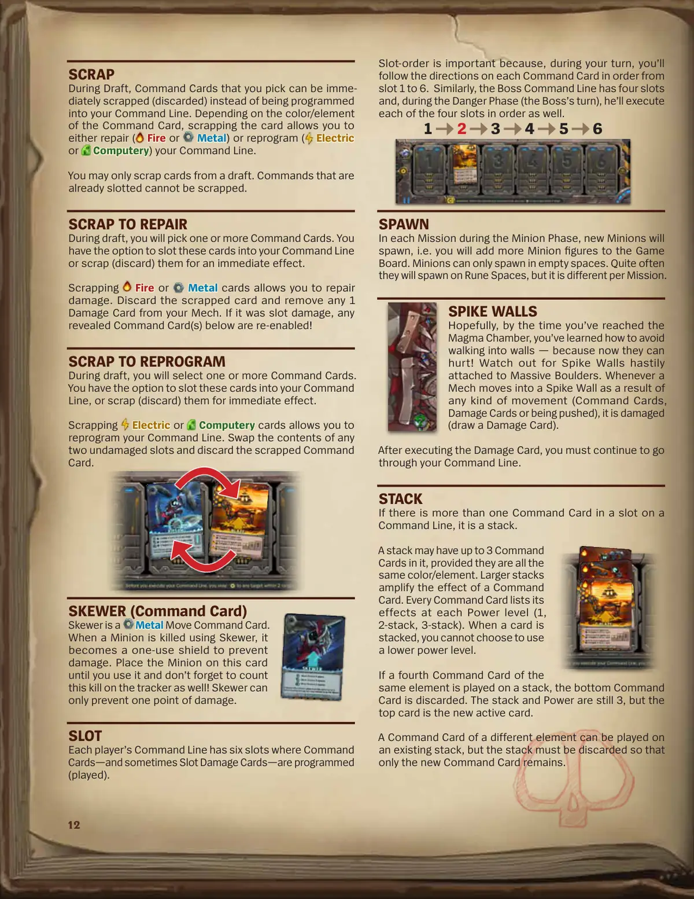
📝 第 14 页 AI 机翻对照（点击展开）
报废
在选牌阶段，你选择的指挥卡可以选择立即报废（弃牌）而不是将其编入你的指令线。根据指挥卡的颜色/元素类型，报废该卡可以让你修复（火焰或金属）或重新编程（电流或电脑）你的指令线。
你只能从选牌阶段报废卡牌。已经编入槽位的指令不能被报废。
报废以修复
在选牌阶段，你将选择一张或多张指挥卡。你可以选择将这些卡编入你的指令线，或者报废（弃牌）它们以获得即时效果。
报废火焰或金属卡可以让你修复伤害。弃掉被报废的卡，并从你的机甲上移除任意1张伤害卡。如果是槽位伤害，下方任何已翻开的指挥卡将重新启用！
报废以重新编程
在选牌阶段，你将选择一张或多张指挥卡。你可以选择将这些卡编入你的指令线，或者报废（弃牌）它们以获得即时效果。
报废电流或电脑卡可以让你重新编程你的指令线。交换任意两个完好槽位的内容，并弃掉被报废的指挥卡。
穿刺（指挥卡）
穿刺是一种金属移动指挥卡。
当使用穿刺杀死一个仆从时，它变成一次性护盾以防止伤害。将仆从放在这张卡上，直到你使用它，并且不要忘记在追踪器上也计入这次击杀！穿刺只能防止一点伤害。
槽位
每个玩家的指令线有六个槽位，指挥卡——有时还有槽位伤害卡——会在其中被编入（打出）。
槽位顺序很重要，因为在你的回合中，你会按照从槽位1到6的顺序依次执行每张指挥卡上的指示。同样，Boss指令线有四个槽位，在危险阶段（Boss的回合），它也会按顺序执行这四个槽位。
生成
在每个任务中的仆从阶段，新的仆从将生成，即你会在游戏版图上添加更多的仆从模型。仆从只能在空格中生成。它们经常会在符文空格上生成，但具体每个任务不同。
尖刺墙
希望当你到达岩浆室时，你已经学会了如何避免撞墙——因为现在墙壁会伤人！小心那些匆忙安装在巨石上的尖刺墙。无论出于何种移动原因（指挥卡、伤害卡或被推动），当机甲移动到尖刺墙时，它将受到伤害（抽取一张伤害卡）。
执行完伤害卡后，你必须继续完成你的指令线。
叠放
如果指令线上一个槽位中有不止一张指挥卡，这就是一个叠放。
一个叠放最多可以有3张指挥卡，前提是它们都是相同颜色/元素。更大的叠放
放大指令卡的效果。每张指令卡都列出了其在每个能量等级（1级、2叠、3叠）的效果。当一张卡被叠放时，你不能选择使用更低的能量等级。
如果同一元素的第四张指令卡被 played 在一个叠放堆上，底部的指令卡将被弃置。叠放堆和能量等级仍为3，但顶部的卡是新的活跃卡。
不同元素的指令卡可以 played 在现有的叠放堆上，但该叠放堆必须被弃置，只留下新的指令卡。
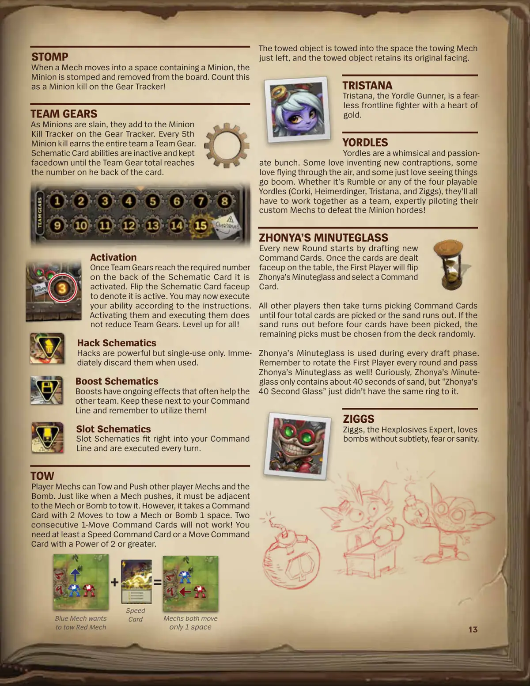
📝 第 15 页 AI 机翻对照（点击展开）
践踏
当机甲移动到一个包含小兵的空间时，该小兵被践踏并从版图上移除。在装备追踪器上将其计为一次小兵击杀！
团队装备
随着小兵被击杀，它们会增加装备追踪器上的小兵击杀计数。每第5次小兵击杀为整个团队赢得一个团队装备。设计图卡的能力保持面朝下且不激活，直到团队装备总数达到卡片背面的数字。
激活
一旦团队装备达到设计图卡背面所需的数量，它就被激活。将设计图卡翻转为面朝上以表示它已激活。现在你可以根据说明执行你的能力。激活它们和执行它们不会减少团队装备。全员升级！
黑客设计图
黑客功能强大但只能使用一次。使用后立即弃掉。
增益设计图
增益有持续效果，通常有助于另一支团队。将它们放在你的指令线旁边，记得要利用它们！
槽位设计图
槽位设计图正好适合放入你的指令线，并且每回合都会执行。
拖拽
玩家机甲可以拖拽和推动其他玩家的机甲以及炸弹。就像机甲推动时一样，它必须与被拖拽的机甲或炸弹相邻。然而，需要一张2点移动的指令卡才能将机甲或炸弹拖拽1个空间。两张连续的1点移动指令卡不会起作用！你至少需要一张速度指令卡或一张力量为2或更高的移动指令卡。
被拖拽的对象被拖拽到拖拽机甲刚刚离开的空间，并且被拖拽的对象保持其原始朝向。
蕾欧娜
蕾欧娜，太阳祭司，是一位无畏的前线战士，拥有一颗金子般的心。
约德尔人
约德尔人是一群古怪而热情的生物。有些人喜欢发明新装置，有些人喜欢在空中飞行，有些人则喜欢看到东西爆炸。无论是瑞姆还是任何四位可玩的约德尔人（库奇、黑默丁格、蕾欧娜和吉格斯），他们都必须作为团队合作，熟练驾驶他们的定制机甲来击败小兵大军！
祖安的沙漏
每个新回合开始时都会抽取新的指令卡。一旦牌被面朝上放在桌上，先手玩家将翻转祖安的沙漏并选择一张指令卡。
然后所有其他玩家轮流选择指令卡，直到总共选出四张牌或沙子流完。如果在选出四张牌之前沙子流完，剩余的选择必须从牌库中随机抽取。祖安的沙漏在每个抽牌阶段都会使用。记得每轮轮换先手玩家，并传递祖安的沙漏！奇怪的是，祖安的沙漏只包含大约40秒的沙子，但"祖安的40秒沙漏"听起来就没有那么顺口了。
吉格斯
Ziggs, the Hexplosives Expert, loves
bombs without subtlety, fear or sanity.
Blue Mech wants
to tow Red Mech
Mechs both move
only 1 space
Speed
Card
+
=
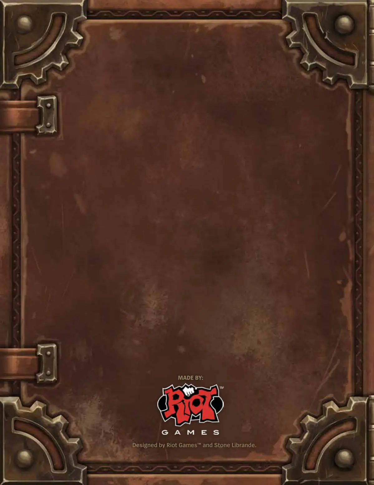
📝 第 16 页 AI 机翻对照（点击展开）
由Riot Games™和Stone Librande设计。